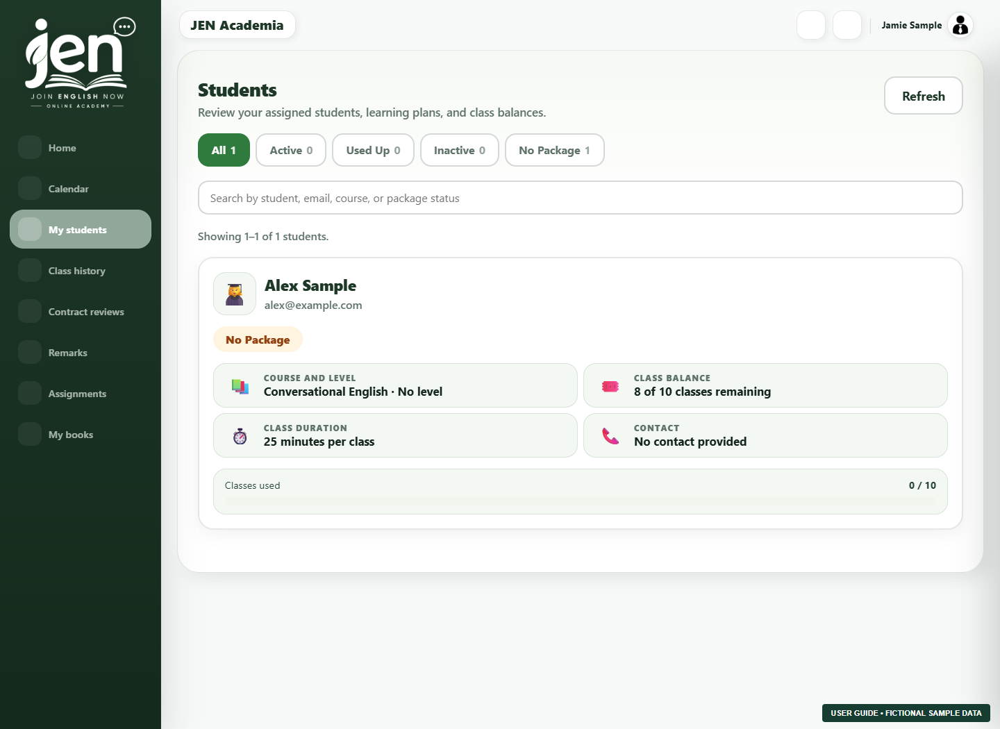
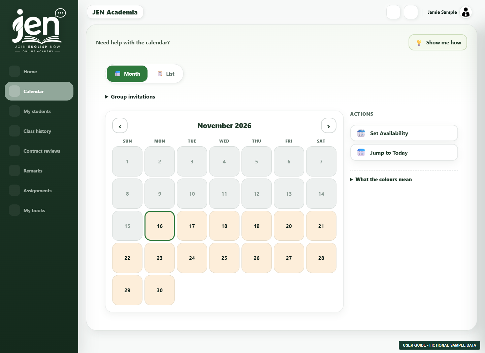
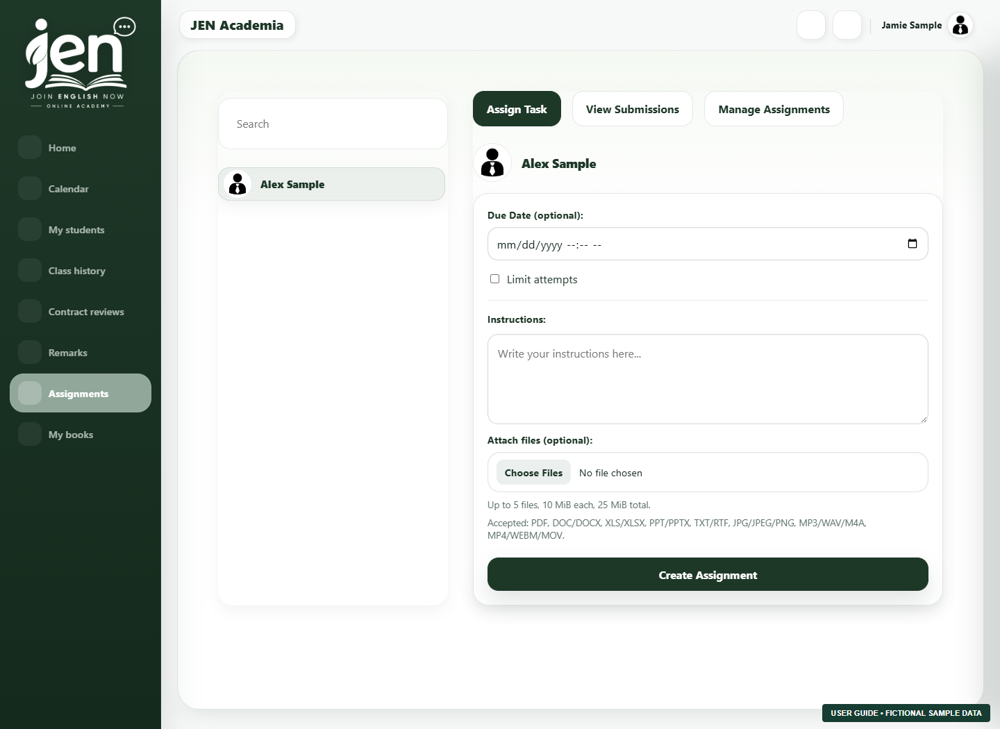

Download the printable PDF · All role manuals
Teacher
User Manual
Clear instructions for every stage.
Prepare. Follow the steps. Check the result.
Start here
Use JEN Academia to publish availability, teach assigned students and maintain reliable learning records.
This manual is for teacher. Read Getting access first, then use the contents to find the task you want to complete. Each task gives preparation, numbered actions and a result to check. Bold words identify on-screen labels or important fields.
Use a current desktop or mobile browser, a reliable internet connection and access to your registered email. For online lessons, use a microphone, speakers or headphones, and a camera when needed. Allow meeting pop-ups and grant microphone/camera access when your browser asks.
| Where to go | What you do there |
|---|---|
| Home / Calendar | Today’s classes, availability and class controls. |
| My students | Assigned learners and package details. |
| Assignments / Remarks | Create work, inspect submissions and maintain feedback. |
| My books / Class history | Distributed materials, progress and prior lessons. |
| Contract reviews / Account | Final proficiency evaluations and profile settings. |
Edition 2.0 • 16 November 2026. This guide follows the current project interface. School-specific availability, prices, contact details and enabled integrations may vary. Pictures are locally rendered interface examples with fictional data; workflow diagrams explain sequences rather than reproduce screens.
Getting access and signing in
Activate your account, enter the correct workspace, and recover access when needed.

Activate your invitation
Before you begin: An administrator has created your student or teacher account and sent a setup invitation.
- Open the newest account setup email. Check Junk or Spam if it is missing. Verify that it came from the school before opening the link.
- Open the setup link. Enter your initial password and confirmation as requested. Use at least eight characters and choose a password you do not use elsewhere.
- Submit the setup form and return to the sign-in page. Keep the password private; the invitation is single use.
Check your result: You can sign in with the invited email and your new password.
If you need help: Invitations normally expire after 24 hours. Ask an administrator for a new invitation if the page says the link is expired, invalid or already used. Always use the newest email.
Sign in
Before you begin: Have your registered email and password ready.
- Open the school website and choose the sign-in option.
- Type the full registered email address and password. Use the eye control if you need to check the password, and hide it again afterward.
- Select Stay signed in only on a device you control. Submit the sign-in form once and wait for the response.
- Confirm you reached your teacher Home page. If Account setup or a required review appears, complete it before continuing.
Check your result: Your role-specific navigation is visible.
If you need help: Repeated failed passwords can temporarily lock the account; the default is five failures followed by a 15-minute lock. Wait or use password recovery. A new successful login can end an earlier session on another device.
My Account and password recovery
Keep your profile and timezone correct before you schedule or attend lessons.
Complete or update your profile
Before you begin: Sign in and open Account from your account menu. First-time users may be sent here automatically.
- Review your name, country, birthday and timezone. Enter the required personal details shown by the setup steps.
- Choose the timezone where you will attend or teach. Compare it with a known local time before saving.
- If you want a profile photo, choose an image or use the camera where supported. Crop, reposition and zoom, then preview the result.
- Review your teaching information and set whether you teach children. Save the changes. Enter your current password if sensitive changes require confirmation.
- Reopen Account and check that the changes were saved. Return to your Home or Overview page.
Check your result: Your saved profile is visible, and required setup no longer blocks navigation.
If you need help: Email and existing phone information are read-only here. Ask an administrator to correct your email. Photo sources may be JPG/JPEG, PNG, WebP or GIF, up to 10 MB before processing; the processed server upload is limited to 2 MB.
Change a known password
Before you begin: You know your current password.
- Open the password-change section in Account. Enter the current password.
- Enter a new password of at least eight characters and repeat it in the confirmation field. Keep it within the form limit; the server maximum is 72 UTF-8 bytes.
- Save and wait for confirmation. If the current password is rejected, correct that field and try again.
Check your result: The password change succeeds. Use the new password next time you sign in.
Recover a forgotten password
Before you begin: You can receive mail at the registered email address.
- From sign-in, open Forgot password. Enter your email and send the request.
- Check your inbox and spam folder. The on-screen response stays general even if an address is unknown.
- Open the newest reset email within one hour. Enter and confirm a new password, submit, then sign in again.
Check your result: The new password works.
If you need help: Reset links are single use and newer requests invalidate older unused links. If no email arrives, ask the school to confirm your account email and mail delivery.
Daily routine and My students
Check the day’s commitments, learner context and outstanding work before teaching.

Prepare for the teaching day
Before you begin: Open Home after signing in.
- Review Classes today. Open Calendar to check later dates and any changed times.
- Read notifications for new bookings, student reschedule requests, submissions and required reviews.
- Open My students. Search by student, email or course; use Active, Used up, Inactive or No package filters as needed.
- Check the learner’s course, contract status, lesson duration, unused classes and expiry. Use pagination for additional students.
- Prepare the distributed lesson material and review previous remarks or submissions.
Check your result: You know whom you are teaching, what to cover and which administrative issues need attention.
If you need help: If an expected student is missing, ask an administrator to check assignment and account status. Your list is scoped to students you are permitted to see.
Publish and maintain availability
Availability opens future booking time; it does not create lessons by itself.

Add a date’s working hours
Before you begin: Complete your teacher profile and open Calendar. Plan a future date within the three-month horizon.
- Open the availability control and select the date. Choose Available or Unavailable.
- For Available, set a start and end time with the end after the start. Review the displayed timezone.
- If taking a break, provide both break start and break end, wholly inside the working hours. Leave both blank for no break.
- Choose Save Availability. Review the confirmation and save.
- Open See my availabilities and check the date, hours and break. Assigned students receive an availability notice.
Check your result: The date appears with the intended status and working time.
If you need help: Past dates are refused. For today, offered start/end values must be after the current time. Fix invalid break times or reversed intervals before saving.
Apply or change multiple dates
Before you begin: Decide the month, weekdays/date set and common working hours.
- Use the bulk availability workflow. Choose the offered dates/weekday pattern and enter the common status, hours and optional break.
- Review the selected-date count and confirmation carefully. Save only the dates you intend to publish.
- Reopen the availability list to verify several intended dates. Edit an existing date using its available action.
Check your result: The selected dates show the published schedule.
Open and start an individual lesson
Keep the meeting and JEN Academia class record aligned from the start.
Start the scheduled class
Before you begin: Check the correct class, student, scheduled time, lesson duration and meeting access.
- Open the lesson from Home or Calendar and review the class details.
- Open the meeting in its separate tab/window. Allow pop-ups, microphone and camera as needed.
- Use the teacher start control in JEN Academia and acknowledge the required consent prompt.
- Check the student’s own attendance status. The student must record attendance; you cannot do this on their behalf.
- Choose the available screenshot or recording evidence flow. Follow the next chapter’s timing and file requirements.
- Teach the lesson and monitor shared attendance. If the student disconnects, help them rejoin while the session is active.
Check your result: Teacher start and the student’s attendance are visible, and the correct evidence process is underway.
If you need help: If the student arrives before you, their attendance can already be recorded. Shared time begins at the later of your start and their attendance. Waiting alone does not count.
Evidence, end-of-class and completion
Complete the record promptly so attendance, evidence and package usage can be resolved correctly.
| Requirement | 25-minute class | 50-minute class |
|---|---|---|
| Minimum shared attendance | 15 minutes | 30 minutes |
| Screenshot start proof | Within 5 minutes after both are present | Within 5 minutes after both are present |
| Screenshot files | Separate start and end files | Separate start and end files |
Use screenshot evidence and end the class
Before you begin: Both participants are present and have recorded their required start/attendance.
- Capture and upload start proof within five minutes of the moment both are present. Proof uploaded before that moment does not qualify for automatic verification.
- Teach for the required shared duration. Capture separate end proof and select it in the end-of-class form.
- Enter a factual class summary with at least four alphanumeric words and a final period, exclamation mark or question mark. Example: “We practiced introductions and reviewed vocabulary.”
- End the session through its class control. Check the evidence and verification state.
- Complete the class when it is eligible. If evidence or duration is insufficient, use the administrator-review path and explain the exception.
- Reopen the class/history to confirm the final outcome. Do not assume that uploading a file alone completed the lesson.
Check your result: The class is verified/completed or explicitly awaiting administrator review. Completion charges the original package once.
Screenshot limits: JPG/JPEG, PNG or WebP; maximum 4 MB for each start/end file. Use the offered replace/remove start-proof controls if correcting evidence, while observing the timing rule.
Recording alternative: follow the recording and consent prompts, capture the required duration, and wait for upload completion. Supported uploads are WebM or MP4, up to 500 MB. Attendance, teacher start and end requirements still apply. Check the recording status before leaving; local retention normally lasts seven days.
Exceptions and student no-shows
Record what happened and send evidence problems for review rather than forcing automatic completion.
Submit an attendance/evidence exception
Before you begin: Open the affected class and check the actual attendance, evidence and summary.
- End the active session when appropriate and preserve the available evidence.
- Use the administrator-review action offered by the class flow. Explain missing/late proof, insufficient duration or another specific exception.
- Submit and check that the verification shows Admin Review. Contact the administrator through chat if the case needs context.
- Follow the eventual verification outcome in class details/history.
Check your result: An administrator has a clear reason and record to review.
If you need help: If a student attended but the teacher never arrived, the administrator can resolve the record as incomplete and release the reservation.
Mark a genuine no-show
Before you begin: The scheduled end has passed and the student never confirmed attendance.
- Open the correct lesson and check the scheduled end and student attendance record.
- Use the available no-show action only if it is offered and the attendance condition is met. Read and confirm the action.
- Check the no-show outcome in the class record. Send any attendance dispute to the administrator.
Check your result: The record shows a no-show. This action alone does not consume a completion credit.
Reschedule requests
A request proposes a change. The original class stays scheduled until the other participant approves.
Ask for a different time
Before you begin: The lesson is eligible, has not started, and neither participant has recorded attendance.
- Open Calendar, choose the class and open its reschedule action.
- Check the original date/time and timezone. Pick a future replacement slot offered by the availability picker.
- Enter a useful reason, such as a school or work conflict. Check that the entire lesson fits before the original contract expires.
- Review the proposal and submit it. Open the request list or related notification to track its status.
Check your result: The request is Pending. Keep the original appointment until approval is confirmed.
If you need help: The time may become unavailable before approval. Ask for another offered slot if the system reports a conflict or an expired contract.
Respond to an incoming request
Before you begin: The other participant sent the request.
- Open the request from Calendar, the request list or its notification. Read the original schedule, proposed schedule and reason.
- Choose the approval action if you can attend. If you cannot, choose decline and provide a meaningful reason; the decline flow requires 5–500 characters.
- Wait for confirmation and reopen Calendar. Check the final class date/time and request outcome.
Check your result: An approved request moves the lesson. A declined request leaves the original lesson in place.
Withdraw your own pending request
Before you begin: You created the request and it is still Pending.
- Open your submitted requests and select the correct lesson.
- Use the cancel/withdraw action and confirm. Check that the request is cancelled and the original lesson remains.
Check your result: The other participant no longer needs to decide your withdrawn request.
Propose and manage group lessons
A group combines exactly two compatible student bookings after both students accept.
Create a group proposal
Before you begin: Both bookings are scheduled, unstarted and eligible. Students are different, with the same teacher, course and 25/50-minute duration.
- Open the first existing class and its group proposal control. Select the compatible second student’s booked lesson.
- Inspect shared available slots and choose a proposed future time. Check both original packages, expiry and participant conflicts.
- Review both original lessons, proposed time and participants, then submit the proposal.
- Monitor the invitation responses. You can cancel your pending proposal through its available action.
- After both accept and final checks succeed, check Calendar for the linked shared session. If declined, cancelled or expired, keep the original lessons.
Check your result: Confirmed conversion reuses the original two student bookings and creates one shared meeting/session.
If you need help: A pending proposal temporarily holds the proposed interval; it does not immediately replace original reservations. Expiry is the earlier of 24 hours after proposal or 15 minutes before the earliest relevant class.
Teach or move an existing group
Before you begin: Open the shared session and verify both students.
- Use group controls to propose a new time for the same participants if a change is needed. Both students must accept the change.
- For teaching, start the session and check each student’s attendance/consent individually. Both students must join and consent before group recording starts.
- Complete evidence, attendance and private remarks for each student. Check each participant’s verification result.
Check your result: Each student’s own attendance and original package are resolved independently.
Create student assignments
Give clear instructions, an optional future deadline and an appropriate attempt allowance.

Create an assignment
Before you begin: Open Assignments and select the intended assigned student.
- Select Assign Task. Check the selected student and course before entering content.
- Enter nonempty instructions stating what to produce, how to submit it and how much work is expected. The form supplies the assignment name from the selected student.
- If setting a deadline, choose a future due date and time. If using Limit attempts, enter a positive whole number; leaving it off means unlimited attempts.
- Attach optional files within the upload limits. Review all fields, choose Create Assignment, then confirm Post Assignment.
- Check that the assignment appears for the correct student with the intended deadline.
Check your result: The student can open the assignment and receives the relevant notification.
Inspect submissions and manage assignments
Read current work and previous attempts, then maintain assignment instructions and archive state.
Inspect and maintain work
Before you begin: Open the correct student’s assignment/submission list.
- Choose View Submissions. Open a submission and read the answer, attached files, timestamp, status and previous-attempt history.
- Open attachments through their protected file controls. Reopen from the list if an old signed link has expired.
- Choose Manage Assignments and use the edit action to correct supported instructions/attachments. Review the saved content afterward.
- Archive work no longer open for submissions; unarchive if appropriate. Permanently delete only after reviewing the confirmation and school retention needs.
Check your result: You have reviewed the submitted work and the assignment has the intended active/archive state.
| Upload | Limit / accepted files |
|---|---|
| Assignment or submission | No file-count limit; 100 MB combined maximum. |
| Documents | PDF, DOC/DOCX, XLS/XLSX, PPT/PPTX, TXT and RTF. |
| Images and media | JPG/JPEG/PNG; MP3/WAV/M4A; MP4/WebM/MOV. |
Write and maintain student remarks
Keep class feedback specific, useful and associated with the right student.
Write class-linked feedback
Before you begin: Open the relevant class workflow and select/check the student.
- Open the remark entry control. Identify the class/date before typing.
- Describe a concrete strength and one practical next step. Example: “You used the new greeting phrases clearly. Practice answering follow-up questions in full sentences.”
- Save the remark and check it in Remarks. A student-facing notification may link to it.
Check your result: The active remark is visible in the student’s own remarks list.
Correct, archive, restore or delete a remark
Before you begin: Open Remarks, select the student and use Active, Archived or All as appropriate.
- Find the correct class-linked remark. Edit your own active remark and save the correction.
- To hide a remark from the student list while preserving it, archive it and confirm.
- To make an archived remark visible again, restore it. Restore before editing if its edit controls are unavailable.
- Use permanent deletion only when intended and confirm the exact record. Recheck the list afterward.
Check your result: The remark text and active/archive state match your intention.
Read distributed books and check progress
Administrators maintain books; teachers use distributed materials and inspect student progress.
Prepare lesson materials
Before you begin: Open My books.
- Search books by the available title/course filters. Select a distributed book and check its course and lesson list.
- Open lesson notes and the supported material viewer/open-file action. Read the material before teaching.
- Open the student progress view where offered. Check completed/total lessons, per-lesson completion and percentage.
- Use progress alongside your own assessment to decide what to review next.
Check your result: You can use the distributed learning material and identify student reading progress.
If you need help: If material is missing, ask an administrator to check distribution, course and archive state. Teachers do not author books/lessons through the current menu.
Submit final contract evaluations
Evaluate a completed contract once, using the same five proficiency criteria used in trial assessment.
Evaluate the student at contract completion
Before you begin: Open Contract reviews and select a contract pending your evaluation.
- Check the student, course and contract. Review the learner’s work and class history before scoring.
- Score every criterion from 1 to 5: Speaking & Pronunciation; Reading & Comprehension; Structure; Sentence / Grammar; Vocabulary.
- Inspect the computed final proficiency level and enter optional comments describing progress and next needs.
- Review carefully and submit once. Check that your evaluation shows submitted.
- Return to normal navigation after the required review is complete.
Check your result: The evaluation is saved and updates the student’s stored proficiency level.
| Scoring condition, checked in this order | Computed level |
|---|---|
| Any criterion other than Speaking & Pronunciation is 1 | Novice |
| All scores ≥4 and average ≥4.5 | Advanced |
| All scores ≥3 and average ≥3.5 | Intermediate High |
| All scores ≥3 | Intermediate Mid |
| Otherwise, average ≥2.8 | Intermediate Mid |
| Otherwise | Intermediate Low |
Class history and learning records
Find previous lessons, outcomes and available recordings.
Find a past lesson
Before you begin: Open Class history.
- Filter by student/participant, outcome and time period: This week, This month or Earlier.
- Read the lesson card: participant, class date/time, duration and outcome. Use Show more to reveal older records.
- Open the available summary or protected recording action. If prompted, remain signed in to authorize access.
Check your result: You find the correct historical class and can review the information still available.
If you need help: A recording is available only while retained and accessible. Local retention normally lasts seven days. If a protected link has expired, reopen the class to request a fresh link; contact the school if the recording is no longer retained.
| Record | Meaning |
|---|---|
| Scheduled | A lesson exists in the timetable; this alone does not mean it was attended or completed. |
| Completed / Verified | The completion and evidence process has been resolved successfully. |
| Admin Review | An attendance/evidence exception needs an administrator’s decision. |
| Incomplete | The verification was resolved as incomplete. Contact the school if you dispute the outcome. |
| No-show | The teacher recorded that a student never confirmed attendance, after the scheduled lesson end. |
Notifications, messages and safe sign-out
Use notifications for task updates and chat for direct communication.
Read and act on notifications
Before you begin: You are signed in.
- Open the notification bell. Check unread items first or use filters such as New times, Homework, Teacher notes, News and Reminders.
- Open an item to see its related class, assignment, book or request. Check the date, timezone and people before acting.
- Use the available read controls to mark an item or all items read. Remove items you no longer need; use clear-all only after checking the list.
Check your result: The relevant page opens and unread indicators update.
If you need help: A removed notification does not undo the class, submission or decision it describes. If an old availability link no longer opens, check Calendar for current availability.
Send a direct message
Before you begin: Choose an appropriate school contact.
- Open the chat launcher and search the contact list. Teachers normally see assigned students and active administrators.
- Select the intended contact. Check the name before typing a clear message about the class or support issue.
- Send the message once. Check that it appears in the conversation. Read receipts and presence indicators provide additional context when available.
- Use Load older when you need earlier messages. Minimize a conversation to keep working, then restore it from its minimized control.
Check your result: Your message appears in the correct conversation.
If you need help: On phones, one conversation window is shown at a time. If sending fails, check your connection and account/profile status, then reopen the conversation before retrying.
Finish your session
Before you begin: Save drafts and confirm any submitted changes first.
- Close meeting tabs when lessons have ended. Open the account menu and choose the sign-out option.
- Confirm the sign-in page appears. On a shared device, close the browser after signing out.
Check your result: Protected pages require sign-in again.
Troubleshooting and support
Use the symptom to choose a next action. Preserve the exact message when reporting an issue.
| Problem | What to do |
|---|---|
| Cannot sign in | Check your full email, password and keyboard settings. Wait if temporarily locked; use password recovery. Ask the school about archived accounts. |
| Setup or reset link fails | Open the newest email. Ask for a fresh setup invitation or request a fresh password reset; older links may have expired or been replaced. |
| Sent back to Account or Contract reviews | Complete the required profile, closing review before continuing. |
| Times look wrong | Compare the timezone in Account and the timezone shown in the class details. Correct the profile timezone and reopen Calendar. |
| A page or upload does not finish | Check connectivity, file format and file size. Confirm whether the action succeeded before retrying. Reopen a stale protected file link from its source page. |
| Availability cannot be saved/deleted | Check future-date horizon, time order and both break fields. A booked date cannot be deleted while scheduled classes remain. |
| Class will not verify automatically | Check shared duration, consent, timely start proof and separate end proof or valid recording. Submit an exception for admin review. |
| Completion is blocked by package status | Ask an administrator to resolve the original booking’s package. A newer package cannot replace it for completion. |
Report a problem clearly
Before you begin: Use school contact information from the website or an available administrator chat.
- Record the affected page, the action you tried, the exact error message, and your local date/time and timezone.
- Include the class, assignment, contract or book identifier/name when available. State the expected result and what actually happened.
- Attach a screenshot with passwords, private messages, invitation/reset links and other people’s personal information hidden.
- Ask the school to confirm the record before you repeat an approval, booking, submission or other change.
Check your result: Support has enough information to locate the issue without receiving your credentials.
Useful terms: A contract/package is an allowance of classes with a duration and expiry. A reservation holds a class allowance for an unresolved booking. An archive hides or disables a record while preserving its data. A review is a closing evaluation, separate from per-class remarks.